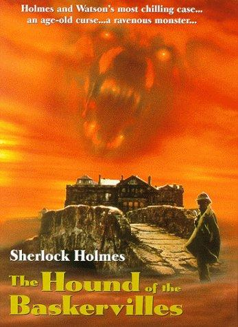
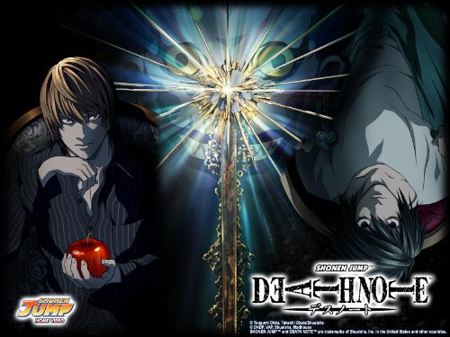

Welcome my friends
What am i going to discus in this page?
in this page i will be introducing myself , my hobbies , my favourite sports, and the things i do
in my free time.
Who am i ?
My name is muhammed kerek, i'm from syria and i'm 20 years old.
i study computer engineering in sakarya university
What are my hobbies ?
i actually have a lot of hobbies .
i like to play football and watch the football matches , especially the Premier League and the spanish League.
My favourite team in the premier league is : Totenham hotsberg
My favourite team in the spanish league and my favourite team of all time and all leagues: Real madrid
i also like to read books . the investigation type to be specific.
my favourite author is sir arthur conan doyle. so of course my favourite book will be
one of the Sherlcok Holmes book series.
My favourite book: The Hound Of The Baskerveile.

What are my favourite sports?
Actually i love several sports .
- football
- Table tennis
- Basket ball
To be honest i love them all but my favourite one is Table tennis.
i've been playing Table tennis since i was 15 and i really love to watch the tournaments.
Other exercises i like to do in my free time
I really love anime and it's part of my daily routine
I've watched a lot of animes but my favourite anime is Death Note

it's about a guy who has a normal life, till a Note book fall from the sky and he grapes the note.
and the suprise is on the note book there is some rules and he reads them and it says if you writedown
someone's name that person sell die. and that's where the journey begin for a guy who wanted to be a god and change the world.
Frankly i love music and music is one of the best things that happend in this world
What is my favourite instrument and music type?
i really really love The "Harmonica" as a music instrument
actually i can play the Harmonica , i've bought one and i'm still learning.
. but i have already learned How to play some simple songs.
And that's one of the songs that i can play on Harmonica.
The song
My favourite music Types:
I like many types but some of them are: Shogaze , Rock and Roll , dream pob
And that is a spotify list of my Type in music:
Click here to start listening